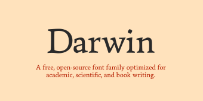
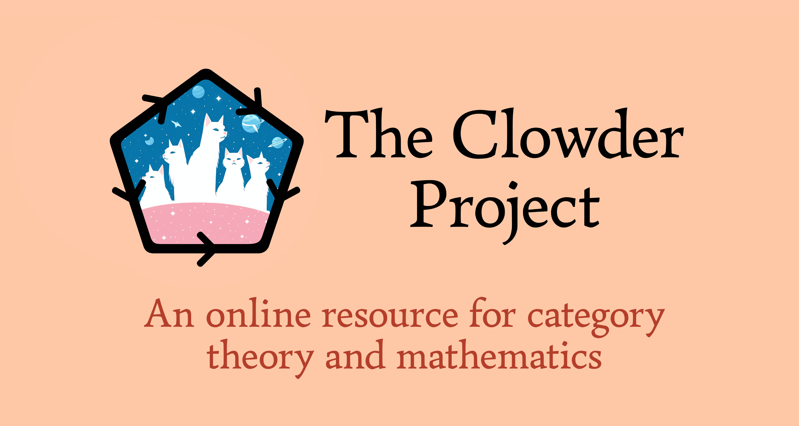

Emily’s Homepage
Welcome to my webpage! My name is Emily (she/her), and this is my homepage. Below you'll find my work on mathematics and type design.
I'm currently working on Darwin, a free and open-source typeface for scientific and academic writing:
You can find more details about Darwin at its GitHub repository or website.
I'm also developing The Clowder Project, an online resource and reference for category theory based on Gerby:

The project is meant to become essentially an Stacks Project for category theory, though it will eventually also include some material in other areas. See the project website for more details.
Below you'll find some of the papers I've written or am currently working on:
You can contact me at the following places:
You can also find me on MathOverflow.